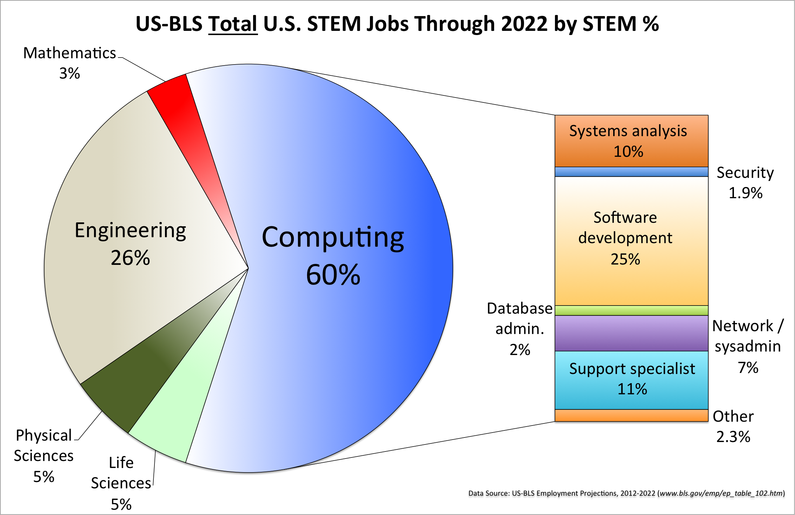
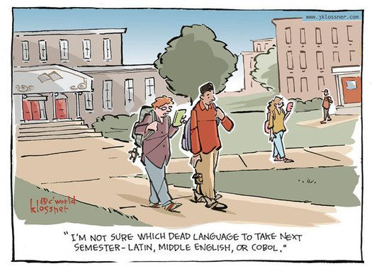
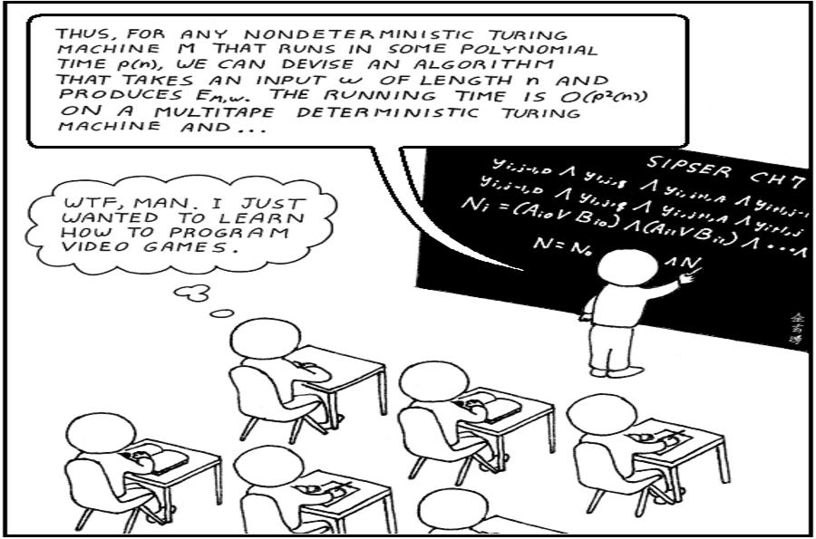
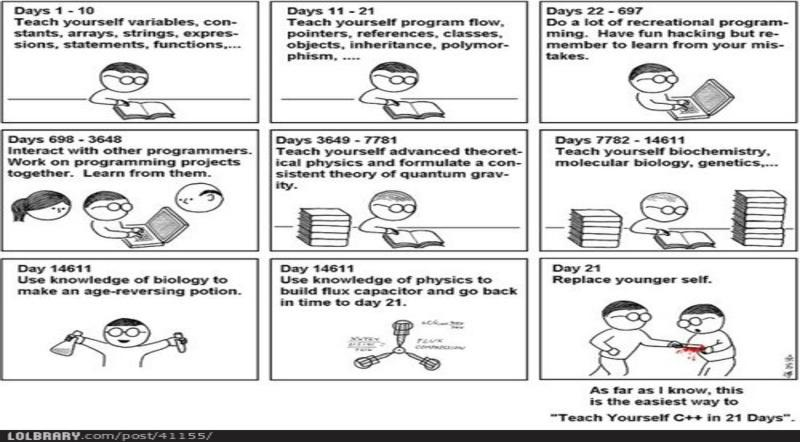

Build a Tech Workforce in 30 minutes
- Mike Zamansky
- @zamansky
- zamansky@gmail.com
- http://cestlaz.github.io
Gratuitous Tech skills gap slide

The knock on College
 |
 |
|  | That's exactly OUR program's problem |
And Code schools?
|
 |
| We'll just retrain them for another $$$ |
How do we do it?
- Build culture
- Build community
Why Hunter?
- NYC has some great CS Ed
- NYC has some really expensive CS Ed
- We're not tapping our greatest resources
- The NYC answer MUST be CUNY
What we're doing at Hunter
- Filling in missing pieces of the CS Ed puzzle
- workshops
- modified classes
- Building Community
- Events
- Partnering with the Tech Ecosystem
- workshops
- mock interviews
- events
- internships
- contract work
What can we do in the Hudson Valley
- You can't spell community college without community
Typical CC CS
| Term 1 | Term 2 |
|---|---|
| CS 1 | CS 2 |
| Calc 1 | Calc 2 |
| Term 3 | Term 4 |
|---|---|
| Data Structures | Architecture |
| Discrete | Linear |
What's needed to get started
- CS 1
- The other stuff
- work opportunities
What you can do?
- Company College partnerships
- Don't believe the hype
- Think global act local
- See me
- Contact me
- @zamansky
- zamansky@gmail.com